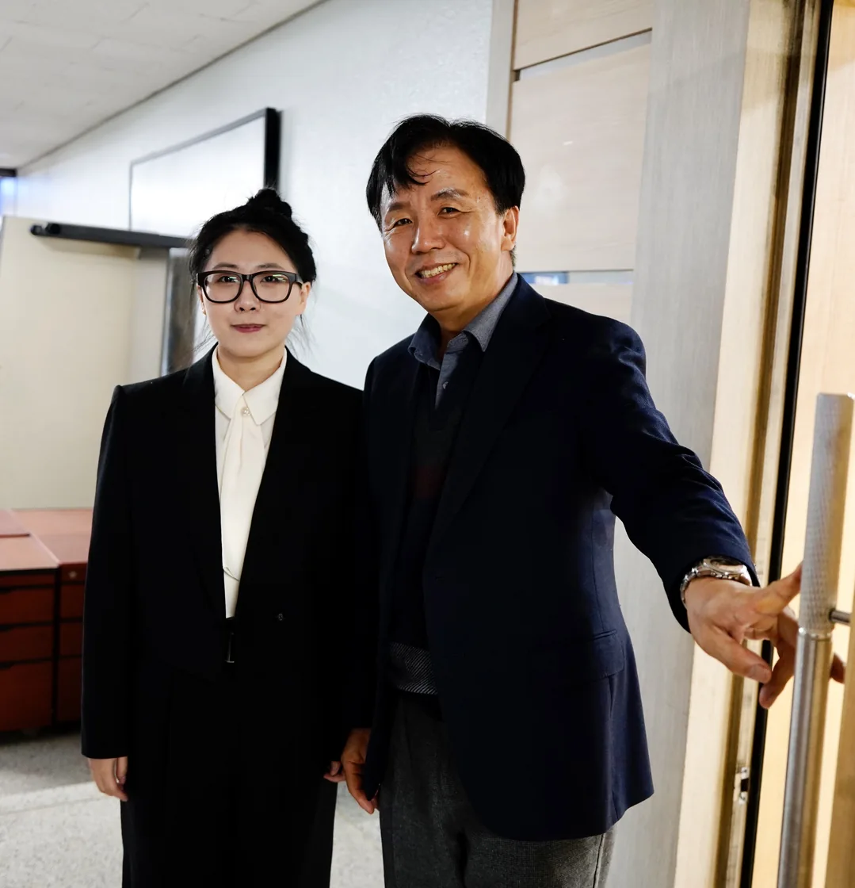

Honors and distinctions
- Selected for the National Overseas Postdoctoral Talent Program (2024)
- Selected for the Shenzhen Specially Appointed Position (Category C), 2024
Apr 2024–Mar 2027
Postdoctoral Fellow and Assistant Researcher · Industrial Artificial Intelligence Centre
Postdoctoral mentor Prof. Yun Li
Aug 2020–Feb 2024
Ph.D. in Aerospace Engineering
Doctoral advisor Prof. Hyochoong Bang

Sep 2017–Jul 2020
M.Eng. in Aeronautical and Astronautical Science and Technology
Master’s advisor Prof. Xiaodong Song
Sep 2013–Jun 2017
B.Eng. in Detection, Guidance and Control Technology